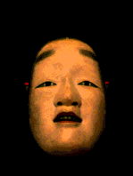
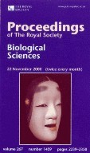

Michael Lyons and Ruth Campbell
The full-face masks worn by skilled actors in Japanese Noh drama can induce a variety of perceived expressions with changes in head orientation. Rotation of the head out of the visual plane changes the two-dimensional image characteristics of the mask which viewers may misinterpret as non-rigid changes due facial muscle action. The figure below shows the same Edo-period Noh mask, Magojiro, at three inclinations.
The lifelike changeability of Noh masks has been known in Japanese theatre for centuries. The earliest such Noh masks were carved in the Kamakura period (1192 - 1333). The effect is considered to be an important ingredient in the mysterious atmosphere of Noh drama.
Examination of the 3-D shape of the Noh mask suggests the origin of this effect. The shape of the Noh mask exaggerates certain features, particularly the depth of the contours of the mouth. The figure below shows that the 2-D projection of these contours varies greatly when the mask tilt is changed.
In the above figure, the 3-D shape of a Noh mask (Ko-omote) was obtained using a Cyberware laser range scanner. In figure 2A, the contour of the upper lip has been highlighted to draw attention to the effect of mouth inclination on its perceived shape. Other regions of the mask such as the eye contours and brow paints undergo changes in apparent shape as the mask is rotated forwards. In figure 2B, the 3D shapes of a Noh mask and a Japanese women's face are shown for comparison.
The unusual shape of the Noh mask is also apparent in the following picture of a Magojiro Noh mask carved in the present era by a master carver.
The animation below shows an animation of a Noh mask being rotated about the horizontal axis

The Noh mask effect seems to be lessened by this regular, predictable motion.
The following papers report joint cross-cultural research on the Noh mask illusion with Professor Ruth Campbell's group in the Department of Human Communication Science, University College London. Our research showed strongly significant cultural differences between Japanese and British subjects viewing the Noh mask. The cultural effect did not extend to perception of facial expressions of the human face.
Viewpoint Dependent Facial Expression Recognition: Japanese Noh Masks and the Human Face
Michael J. Lyons, Andre Plante, Miyuki Kamachi, Shigeru Akamatsu, Ruth Campbell & Mike Coleman
Proceedings of the 22nd Annual Conference of the Cognitive Science Society,
Aug. 13-15, Institute for Research in Cognitive Science, University of Pennsylvania.(461K PDF)
The definitive, journal version is:
The Noh Mask Effect: Vertical Viewpoint Dependence of Facial Expression Perception.
Michael Lyons, Ruth Campbell, Andre Plante, Mike Coleman, Miyuki Kamachi & Shigeru Akamatsu
Proceedings of the Royal Society of London B 267: 2239-2245 (2000). (456K PDF)
doi: 10.1098/rspb.2000.1274
The mask was featured on the cover.

Noh Subtlety for the British, Nature Science Update, November 8, 2000.
All images on this page are by Lyons and Plante.
Please check with us before using them. Higher resolution images and other materials related to the project are available at the following link:
The Noh Mask Effect - Archive of Research Materials on Noh Masks and Facial Expression
Related Research Projects on this Site
The Mouthesizer
JAFFE Facial Expression Database
Personalized Avatar Creation using Face Recognition
Web Resources on Facial Expression Research
{kind=link}